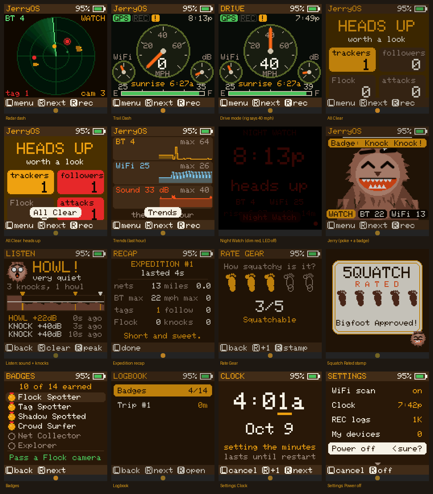

Free, listen-only privacy monitor firmware for the AIPI Lite, starring Jerry the Squatch.
Saves a full copy (16 MB) of what's on the device now, so you can always go back to stock. Do this once, before your first install. It takes a few minutes.
Keep the file private: it can contain the Wi-Fi password you gave the stock app. Jerry checks the copy looks right before saving it.
One click: JerryOS v1.6 goes on, and Jerry plays an intro when he restarts. Updating from an older JerryOS? Leave "Erase device" unticked to keep your settings, badges and logs.
Unplug and replug, try another USB port or cable, close other programs using the device, and try again. Last resort (no soldering): there's a BOOT button under the back cover; hold it while plugging in USB, let go, then click Install. The screen stays dark in that mode; that's normal.
Everything Jerry saved while REC was on, as spreadsheet files (CSV): the Wi-Fi networks, the Bluetooth devices (trackers, followers and cameras marked), and your Expedition recaps. Open them in Excel or Google Sheets.
Puts your step-1 backup back on the device, exactly as it was before JerryOS.
Trackers (AirTag, Tile, SmartTag...) travelling with you, devices that follow you, Wi-Fi and Bluetooth attacks, Flock licence-plate cameras, hidden-camera hints, six home dashes (Radar, Trail Dash, All Clear, Trends, Night Watch), a knock detector, expedition recaps, badges and the 5quatch Rated stamp. He only ever listens; he never transmits.
